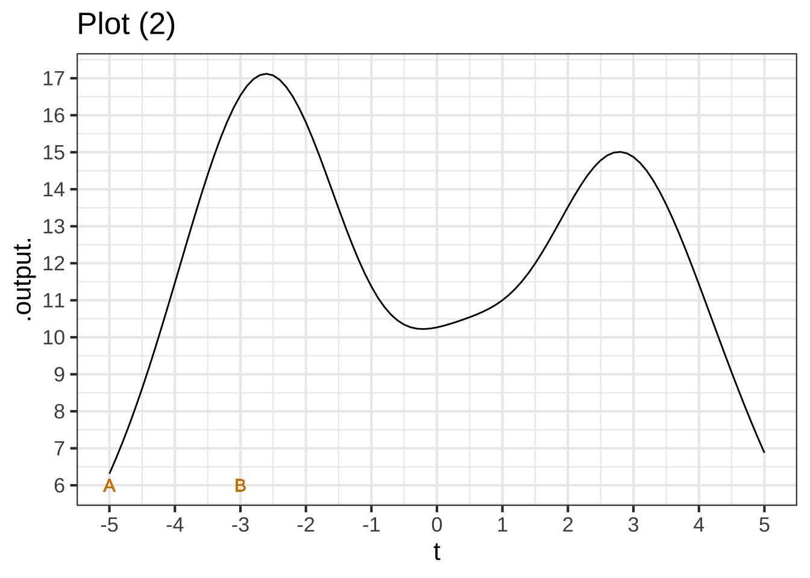
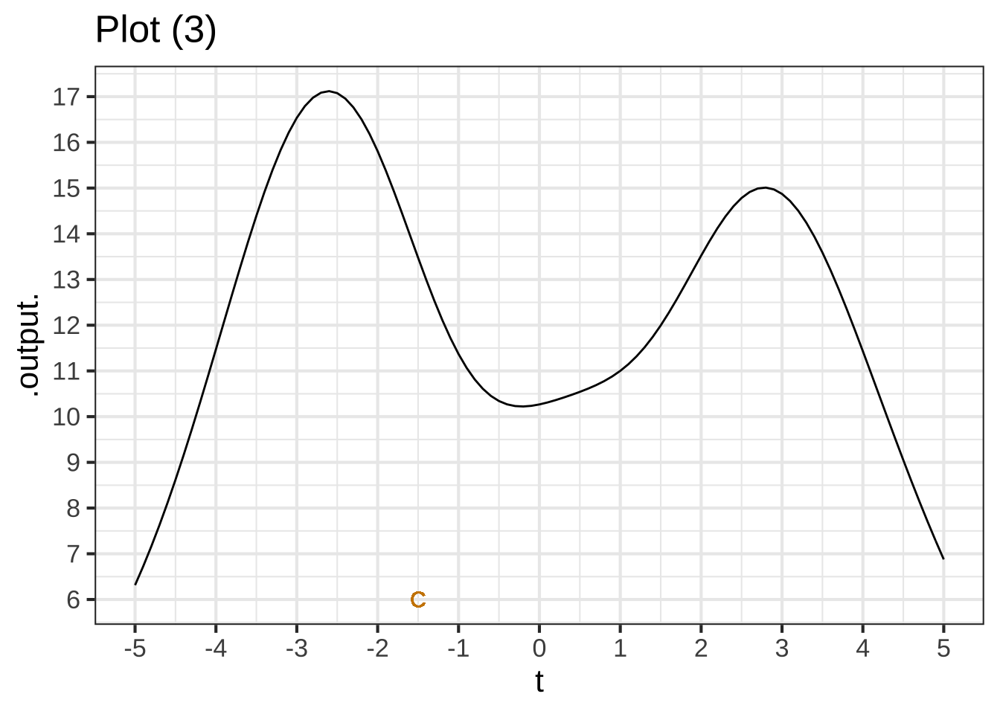

2021-10-17
Chapter 1 Change
Calculus is about change, and change is about relationships. Consider the complex and intricate network of relationships that determine climate: a changing climate implies that there is a relationship between, say, global average temperature and time. Scientists know temperature changes with levels of CO2 and methane which themselves change due to their production or elimination by atmospheric and geological processes. A change in one component of climate (e.g., ocean acidification or pH level) provokes change in others. Calculus is foundational to the study of such change relationships.  100
100
This book presents calculus in terms of two simple concepts central to the study of change: quantities and functions. Those words have everyday meanings which are, happily, close to the specific mathematical concepts that we will be using over and over again. Close … but not identical. So, pay careful attention to the brief descriptions that follow.
1.1 Quantity vs number
A mathematical quantity is an amount. How we measure amounts depends on the kind of stuff we are measuring. The real-world stuff might be mass or time or length. It equally well can be velocity or volume or momentum or corn yield per acre. We live in a world of such stuff, some of which is tangible (e.g., corn, mass, force) and some of which is harder to get your hands on and your minds around (acceleration, crop yield, fuel economy). An important use of calculus is helping us conceptualize the abstract kinds of stuff as mathematical compositions of simpler stuff. For example, crop yield incorporates mass with length and time. Later, you’ll see us using the more scientific-sounding term dimension instead of “stuff.” In fact, Chapter 16 is entirely dedicated to the topic of dimensions, but for now it’s sufficient for you to understand that numbers alone are not quantities.
Most people are inclined to think “quantity” is the same as “number”; they conflate the two. This is understandable but misguided. By itself a number is meaningless. What meaning does the number 5 have without more context? Quantity, on the other hand, combines a number with the appropriate context to describe some amount of stuff.
The first thing you need to know about any quantity is the kind of stuff it describes. A “mile” is a kind of stuff: length. A meter is the same kind of stuff: length. A liter is a different kind of stuff: volume. A gallon and an acre-foot are the same kind of stuff: volume. But an inch (length) is not the same kind of stuff as an hour (time).
“Stuff,” as we mean it here, is what we measure. As you know, we measure with units. Which units are appropriate depends on the kind of stuff. Meters, miles, microns are all appropriate units of length, even though the actual lengths of these units differ markedly. (A mile is roughly 1.6 million millimeters.) 110
Only after you know the dimension and units does the number have meaning. Thus, a number is only part of specifying a quantity.
Here’s the salient difference between number and quantity when it comes to calculus: All sorts of arithmetic and other mathematical operations can be performed to combine numbers: addition, multiplication, square roots, etc. When performing mathematics on quantities, only multiplication and division are universally allowed. For addition and subtraction, square roots, and such, the operation makes sense only if the dimensions are suitable.
The mathematics of units and dimension are to the technical world what common sense is in our everyday world. For instance (and this may not make sense at this point), if people tell me they are taking the square root of 10 liters, I know immediately that either they are just mistaken or that they haven’t told me essential elements of the situation. It’s just as if someone said, “I swam across the tennis court.” You know that person either used the wrong verb—walk or run would work—or that it wasn’t a tennis court, or that something important was unstated, perhaps, “During the flood, I swam across the tennis court.”
1.2 Functions
The other central concept in the book is functions in their mathematical and computing sense. Functions are the primary topic for Block 1. A function is something that takes one or more inputs and returns an output. In calculus, we’ll deal mainly with functions that take one or more quantities as inputs and return another quantity as output. But sometimes we’ll work with functions that take functions as input and return a quantity as output. And there will even be functions that take a function as an input and return a function as output.
A function is something that takes one or more inputs and returns an output.
You’ve almost certainly seen functions expressed in the mathematical form \(f(x)\). The function is \(f()\), the input is \(x\). Perhaps it’s obvious at this point that \(x\) is a quantity. \(f(x)\) means to apply the function \(f()\) to the input quantity \(x\), creating the output \(f(x)\). In computing, there are explicit notations to identify the output of a function. Strangely, in high-school mathematics there is not. This is a major source of confusion both to students learning calculus and to professionals using computers to do the work of calculus. 120
It’s possible to present calculus without functions. For instance, Isaac Newton, the inventor of calculus, spoke of “flowing quantities.”1
It’s practically impossible (and generally unwise) to do computing without functions. They are a basic building block of every mainstream modern computer language. Since the operations of calculus in actual practice are performed on the computer, common sense suggests that we should describe calculus in terms of functions. That’s what we will do in this book.
For you, this may take a bit of getting used to. The reason is that the notation used in high-school algebra and in almost all calculus texts is not the notation of functions. For example, many students are familiar with this famous equation: \[y = m x + b\] Using the language of math classes, we can say that the equation involves two “variables.” And from your experience, you know that the variables are \(x\) and \(y\). The other letters, \(m\) and \(b\), are something else. Many students will reflexively call them the “slope” and “intercept” of the “line.”
You are so used to this that you probably don’t see the huge ambiguity involved. For instance, what is a variable? Common sense suggest that it’s a thing that varies. But if we know the value of \(x\), is it still a variable? In statistics, a variable is something else entirely: a trait. Since statistics and mathematics are used together, this is bound to bring confusion. 130
The notation of equations is a poor substitute for the notation of functions. For instance, what is the input and what is the output? It’s not explicitly stated in the equation. If, using the allowed manipulations of algebra, we re-arrange \[y = m x + b \ \ \text{into}\ \ \ m = \frac{y-b}{x}\] do we still have a function? If so, is it the same function as \(m x + b\)? Would \(x\) be the input or would both \(x\) and \(y\) be inputs? How about \(b\)? And in the re-arrangement, we have a problem if \(x\) is zero, a problem we would never encounter in the original \(y=mx+b\).
The engineers and mathematicians who invented computer languages realized that they had to be explicit in identifying the input, the output, and the function itself; computers demand unambiguous instructions.2 Sorting this out was a difficult process even for those mathematically talented and skilled pioneers of notation. So, you can be forgiven for the occasional confusion you have when dealing with notation that pre-dates computing. 140
In this book we’ll be explicit and consistent in the ways we denote functions so that you can always figure out what are the inputs and how they are being translated into the output. A good start in learning to read the function notation is to see the equivalent of \(y=m x + b\) in that notation: \[g(x) \equiv m x + b\] Notice that we’re using \(\equiv\) (with three parallel bars) rather than \(=\). Pronounce \(\equiv\) as “is defined to be,” or “equiv” for short. There’s no \(y\). The \(x\) appears in parentheses on the left side of \(\equiv\) to say explicitly “\(x\) stands for the input.” The notation provides a place to state the name of the function, in this case \(g()\), so that we can refer to the function unambiguously when we are doing operations on it. Since often we’ll be using many functions at the same time, it’s helpful to have a way to distinguish them by name. The functional notation makes it easy to create many different names, e.g. \(g_\star()\), \(h_\text{altitude}()\), azimuth(), and so on. The high-school habit of using \(y\) doesn’t give such flexibility.
1.3 Fundamental model of change
At the start of the chapter, it says, “Calculus is about change, and change is about relationships.” The idea of a function gives a definite perspective on this. The relationship is between a function’s input and the function’s output. The input might be day of the year (1-365, often called the “Julian Date”), and the output cumulative rainfall up to that day. Every day it rains, the cumulative rainfall increases. For another function(, the input might be the altitude on your hike up Pikes Peak and the output the air temperature. Typically, as you gain altitude the temperature goes down. With still another function, the input might be the number of hours after noon, the output the brightness of sunlight. As the sun goes down, the light grows dimmer, but only to a point. 150
The rate of change is based on a simple question: If the input changes from \(x = A\) to \(x = B\), how much does the output change? Of course, the output from function \(f(x)\) will be \(f(x=A)\) and \(f(x=B)\) respectively. The rate-of-change relationship is the ratio \[\frac{\color{red}{f(x=B) - f(x=A)}}{\color{blue}{B-A}}\ \ \text{also written}\ \ \frac{\color{red}{\text{rise}}}{\color{blue}{\text{run}}}\]
Why do we focus on the rate of change rather than something simpler, for example the net change \(\color{red}{f(x=B) - f(x=A)}\)? The reason goes back to a scientific breakthrough in the 1600s: the writing down of the Newton’s laws of motion. The language in which these laws were first successfully expressed is the language of rates of change. In the intervening 400 years, the laws have been updated with the theory of relativity and quantum mechanics. These laws too are expressed as rates of change. In undertaking to study just about any quantitative field from engineering to economics you’ll find that theory is expressed using functions and rates of change.
You may recognize in the formula for the rate of change a familiar quantity: the slope of a line. Everyone understands what a line is, but the geometry is not our primary concern here. We describe relationships using functions and for us the straight-line function will be a fundamental way of expressing a relationship. Straight-line functions can be written in several ways, but we’ll tend to use two predominant forms:
\[\line(x) \equiv a x + b\ \ \ \text{or}\ \ \ \ \line(x) \equiv a [x - x_0]\]
The two forms are interchangeable, but as you’ll see in upcoming chapters, sometimes it’s more convenient to use one form or the other. In either case, the rate of change is, quantitatively, the value of the parameter \(a\). 160
The simple function \(\line(x)\), whose change relationship we understand intuitively, will be used to approximate more complicated change relationships. With the approximation in place, we can do calculations about the change relationships much more easily. Collectively, the set of mathematical concepts and techniques that support describing and calculating on change relationships has the name Calculus.
In writing \(\line(x) \equiv a [x - x_0]\) I used square braces \(\left[\strut\ \right]\) rather than parentheses \(\left(\strut\ \right)\) to surround \(x - x_0\). Either could be used and there is no difference in meaning. In traditional mathematical notation, either serves to demarcate a sub-expression. We’ll be using parentheses very extensively in expressions like \(\line(x)\), so it’s nice to have a visual break.
1.4 Exercises
Exercise 1.1: VDKUI
Since the inputs to functions are quantities, it’s convenient to give them names that remind the human reader what they stand for.
The most common name we will use in this book for an input to a function will be:
- \(\large x\) a general-purpose name that complies with the practice in high-school algebra. Remember, for us \(x\) is not an “unknown” as it so often is in algebra; in calculus \(x\) is the name of an input.
Perhaps next most common as an input name is
- \(\large t\). This name is typically used when the input is meant to be time. So if we were creating a function to represent the relationship between time (of day) and outdoor brightness, we might use this notation: \(\text{brightness}(t)\)
Other input names we will use in this book are \(y\), \(z\), \(u\), \(v\), \(w\). But we won’t shy away from more descriptive names, like \(T\) for “temperature” or \(V\) for volume, or even \(\text{altitude}\) (which describes itself).
For each of the following function definitions, what is the input name?
Question A Input name in \(g(t) \equiv 2 t^2 + 8\)?
t\(\heartsuit\ \) u︎✘ v︎✘ w︎✘ x︎✘ y︎✘ z︎✘
Question B Input name in \(\line(z) \equiv a z + b\)?
t︎✘ u︎✘ v︎✘ w︎✘ x︎✘ y︎✘ z\(\heartsuit\ \)
Question C Input name in \(h(t) \equiv 2 t^2 + 8 w\)?
t\(\heartsuit\ \) u︎✘ v︎✘ w︎✘ x︎✘ y︎✘ z︎✘
Question D Input name in \(f(u) \equiv a u + b + u^2\)?
t︎✘ u\(\heartsuit\ \) v︎✘ w︎✘ x︎✘ y︎✘ z︎✘
Question E Input name in \(g(w) \equiv x + 4\)?
- t︎✘
- u︎✘
- v︎✘
- wExcellent!
- x︎✘ Tricked you! It’s the name in the parentheses on the left side of \(\equiv\) that matters. Evidently, the output of \(g(w)\) doesn’t depend on \(w\). That’s not much of a relationship, but it is a common one.
- y︎✘
- z︎✘
Exercise 1.2: KHDUE
Each of the plots shows the graph of a function with two inputs, \(A\) and \(B\), marked.

Question A In plot (1), what is the rate of change over the interval \(A\) to \(B\)? (Pick the closest answer.)
- -15/2︎✘ Remember to take the difference: \(f(B) - f(A)\).
- 15/2︎✘ The order of A and B is significant!
- 2/15︎✘ It’s “rise” over “run”, not the other way around.
- -2/15︎✘ It’s “rise” over “run”, not the other way around.
- 8/2︎✘ The order of A and B is significant!
- -8/2Nice!
- 2/8︎✘ The order of A and B is significant!
- -2/8︎✘ It’s “rise” over “run”, not the other way around.
- -15/5︎✘ Remember to take the difference: \(B - A\)

Question B In plot (2), what is the rate of change over the interval \(A\) to \(B\)? (Pick the closest answer.)
- -17/2︎✘ Remember to take the difference: \(f(B) - f(A)\).
- 2/17︎✘ It’s “rise” over “run”, not the other way around.
- -10/2︎✘ The order of A and B is significant!
- 10/2Nice!
- 2/10︎✘ The order of A and B is significant!
- -2/10︎✘ It’s “rise” over “run”, not the other way around.
- -17/-5︎✘ Remember to take the difference: \(B - A\)

Question C We haven’t told you exactly how to do this yet, but give it a try. What is the rate of change near the point marked \(C\)? (Pick the closest answer.))
-1/2︎✘ -1︎✘ -2︎✘ -3︎✘ -3/2︎✘ -4︎✘ -5\(\heartsuit\ \)In Newton’s language, a “flowing quantity” was a fluent and the change in a flowing quantity was a fluxion.↩︎
Actually, it’s common to give computers ambiguous instructions. The computer will carry out the instruction in the way it does, which may not be anything like what the programmer expected or intended.↩︎